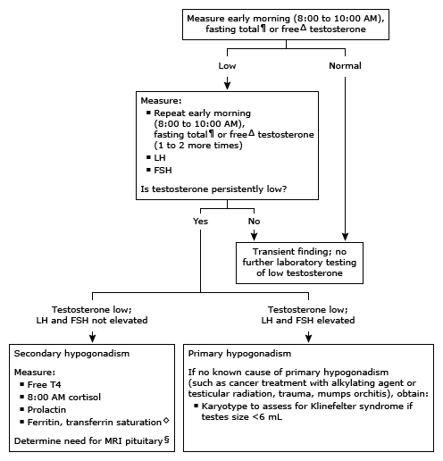

LH: luteinizing hormone; FSH: follicle-stimulating hormone; T4: thyroxine; MRI: magnetic resonance imaging; CDC: Centers for Disease Control and Prevention; SHBG: sex hormone-binding globulin; TIBC: total iron binding capacity.
* The normal range in adult males varies depending on the total testosterone assay and reference population used. Interpretation of a specific abnormal test result should be based upon the reference range reported with that result. For accurate and reliable United States CDC-certified total testosterone assays, the harmonized reference range is 264 to 916 ng/dL (9.2 to 31.8 nmol/L). Males with acute or subacute illness, or taking a short course of opioids or glucocorticoids for acute pain or illness, should not be assessed for hypogonadism, as they will have a transient functional secondary hypogonadism.
¶ Interpretation of serum testosterone measurements in males should take into consideration its diurnal fluctuation, which reaches a maximum at approximately 8:00 AM, and suppression by glucose or food ingestion. It is easier to distinguish subnormal from normal when normal is higher, so the measurements should always be made in the morning, fasting, ideally between 8:00 to 10:00 AM.
Δ Measurement of the serum free testosterone concentration is worthwhile only when it is suspected that an abnormality in testosterone binding to SHBG coexists with hypogonadism, primarily in obesity (decreases SHBG in proportion to degree of obesity) and male aging (increases SHBG slightly).
◊ Transferrin saturation is the ratio of serum iron to TIBC, expressed as a percentage.
§ In males with secondary hypogonadism, MRI should always be performed if the patient has other pituitary hormonal abnormalities, a visual field abnormality, or other neurologic abnormalities. If there is no other evidence of pituitary or hypothalamic disease, finding a mass lesion on MRI is more likely the younger and healthier the patient and the lower the serum testosterone concentration.